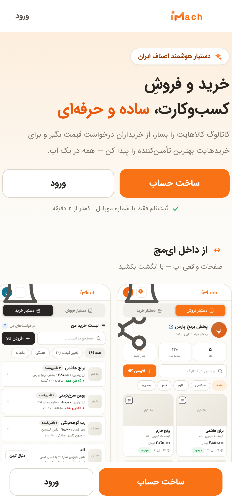
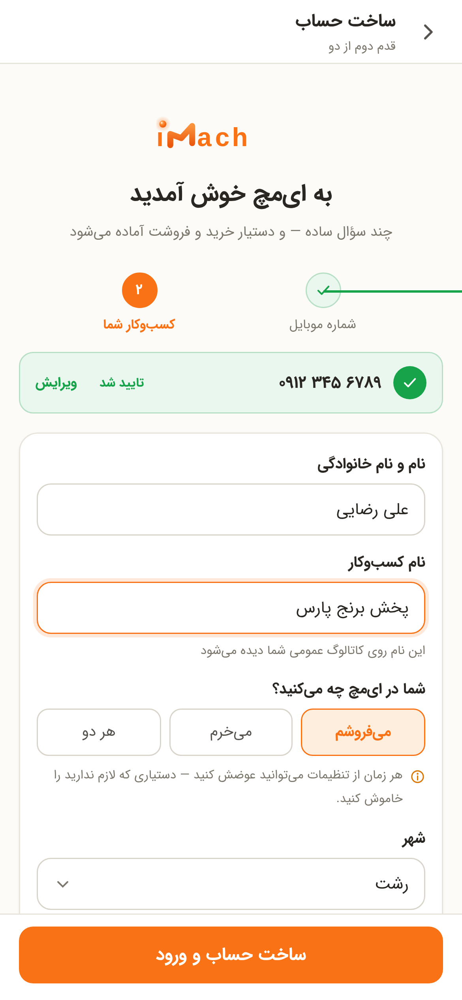
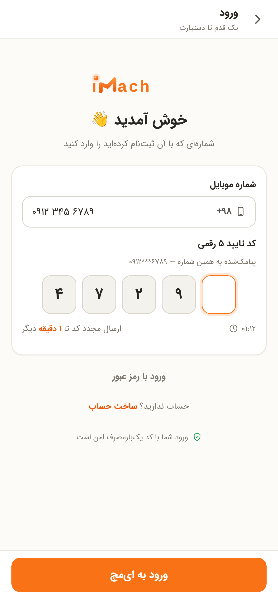
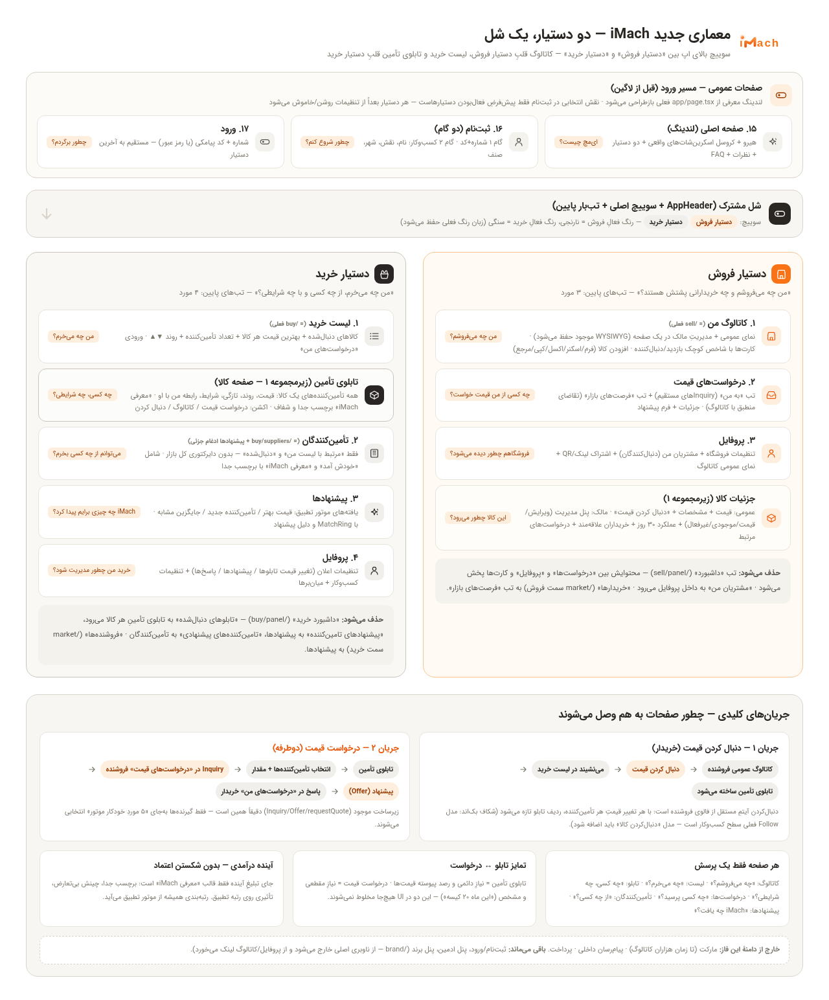
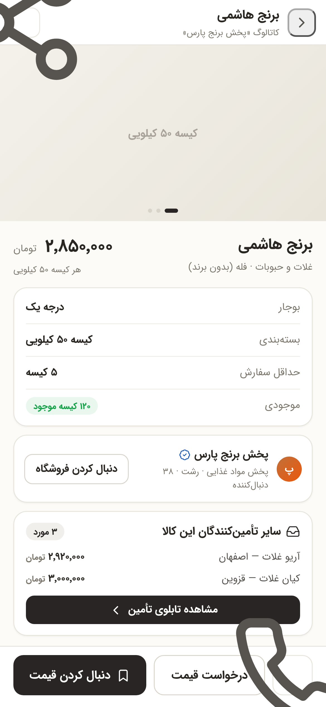
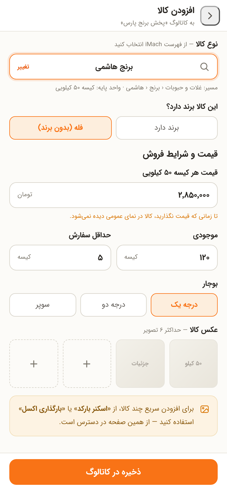
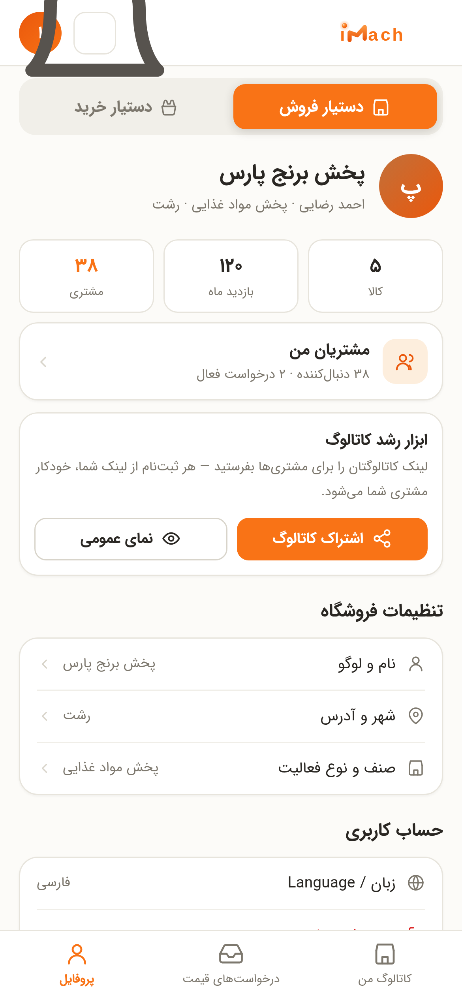
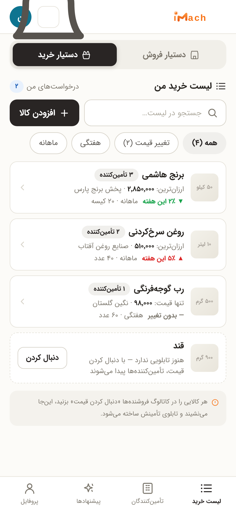
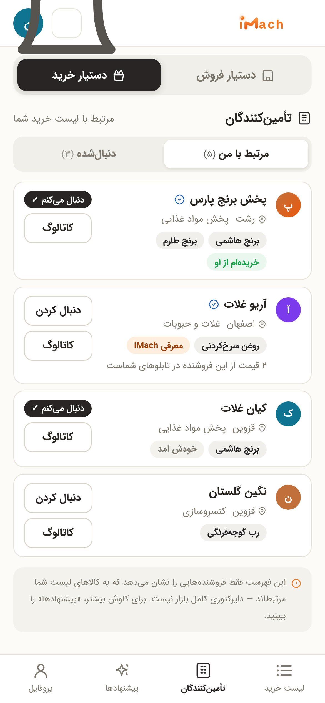

طرح بازطراحی iMach — دو دستیار، یک شل
سوییچ اصلی: «دستیار فروش» (کاتالوگ، درخواستهای قیمت، پروفایل) و «دستیار خرید» (لیست خرید، تأمینکنندگان، پیشنهادها، پروفایل).
کاتالوگ قلب دستیار فروش میشود؛ لیست خرید و تابلوی تأمین قلب دستیار خرید. رنگها و فونت از خود اپ واقعی عکسبرداری شدهاند.
جدید: صفحات عمومی قبل از ورود هم طراحی شدند — لندینگ معرفی (با کروسل اسکرینشاتهای واقعی)، ثبتنام و ورود.
دستیار فروش — ۳ تب
دستیار خرید — ۴ تب
صفحات عمومی قبل از ورود: لندینگ · ثبتنام · ورود
«کاربر تازه با چه چیزی روبهرو میشود؟» — لندینگ با کروسل افقیِ اسکرینشاتهای واقعی داخل سیستم + دو دستیار + نظرات و سوالات پرتکرار؛ ثبتنام دوگامی با انتخاب نقش (قابل تغییر از تنظیمات)؛ ورود با کد پیامکی.

۱۵ — صفحه اصلی (لندینگ)هیرو + کروسل اسکرینشاتهای واقعی + دو دستیار + امکانات + سه قدم + نظرات + FAQ + CTA چسبانایمچ چیست و چه شکلی است؟

۱۶ — ثبتنام (دو گام)گام ۱ شماره+کد ✓ → گام ۲ کسبوکار: نام، نقش (میفروشم/میخرم/هر دو)، شهر، صنفچطور شروع کنم؟

۱۷ — ورودشماره موبایل + کد ۵ رقمی + تایمر ارسال مجدد + لینک جایگزین رمز عبورچطور برگردم؟
معماری و جریانها
نقشه کلان: هر صفحه چه پرسشی را جواب میدهد، چه چیزی حذف میشود، جریان «دنبال کردن قیمت» و «درخواست قیمت» چطور صفحات را به هم وصل میکند.

نسخه تعاملی و بزرگتر: architecture.html — بازش کنید و زوم کنید
دستیار فروش ۳ تب: کاتالوگ من · درخواستهای قیمت · پروفایل
«من چه میفروشم و چه خریدارانی پشتش هستند؟» — نمای عمومی و مدیریت مالک در یک صفحه (WYSIWYG فعلی حفظ میشود). روی هر تصویر کلیک کنید تا نسخه زنده HTML را ببینید.

۰۱ — کاتالوگ منشل جدید + سوییچ اصلی + شاخصهای کوچک روی کارتها (بازدید/دنبالکننده) + افزودن کالامن چه میفروشم؟

۰۲ — جزئیات کالا (دید خریدار)قیمت و مشخصات + CTA «دنبال کردن قیمت» + پیشنمایش تابلوی تأمین همین کالاقیمتش چقدر است؟

۰۳ — جزئیات کالا (دید مالک)همان صفحه + پنل مدیریت + عملکرد ۳۰ روز + خریداران علاقهمند + درخواستهای مرتبطاین کالا چطور میرود؟

۰۴ — فرم افزودن/ویرایش کالاانتخاب از کاتالوگ مرجع + قیمت/موجودی/حداقل سفارش + گالری — مینیمال برای کاربر سادهکالا را چطور ثبت کنم؟

۰۵ — درخواستهای قیمتتب «به من» + تب «فرصتهای بازار» (تقاضای منطبق) — جایگزین داشبورد و بازارِ سمت فروشچه کسی از من قیمت خواست؟

۰۶ — جزئیات درخواست + پاسخمشخصات خریدار + «مطابق کاتالوگ شما» + فرم پیشنهاد با قیمت پیشفرض کاتالوگچطور پاسخ بدهم؟

۰۷ — پروفایل فروشندهمشتریان من (دنبالکنندگان) + اشتراک لینک/QR + تنظیمات فروشگاه + نمای عمومیفروشگاهم چطور دیده میشود؟
دستیار خرید ۴ تب: لیست خرید · تأمینکنندگان · پیشنهادها · پروفایل
«من چه میخرم، از چه کسی و با چه شرایطی؟» — تابلوی تأمین صفحه کالاست، نه آیتم ناوبری. دنبال کردن قیمت یعنی: کالا به لیست + تابلو اضافه میشود.

۰۸ — لیست خریدهر کالا با ارزانترین قیمت + تعداد تأمینکننده + روند ▼▲ + ورودی «درخواستهای من»من چه میخرم؟

۰۹ — تابلوی تأمین (صفحه کالا)همه تأمینکنندههای یک کالا: قیمت/روند/تازگی/شرایط + «معرفی iMach» با برچسب جدا و شفافچه کسی، چه شرایطی؟

۱۰ — تأمینکنندگانفقط «مرتبط با من» و «دنبالشده» — بدون دایرکتوری کل بازار؛ شامل «خودش آمد»از چه کسی میتوانم بخرم؟

۱۱ — پیشنهادهایافتههای موتور تطبیق: قیمت بهتر / تأمینکننده جدید / جایگزین — با MatchRingiMach چه چیزی برایم پیدا کرد؟

۱۲ — فرم درخواست قیمتنیاز مقطعی و مشخص: مقدار + زمان + گیرندگانِ انتخابی + گسترش اختیاری به شبکه iMachچطور قیمت بخواهم؟

۱۳ — کاتالوگ عمومی فروشندههمان کامپوننت کاتالوگ بدون ابزار مالک + «دنبال کردن قیمت» روی کارتها + رد ویروسیاین فروشنده چه میفروشد؟

۱۴ — پروفایل خریدارتنظیم اعلانها (تغییر قیمت تابلوها / پیشنهادها / پاسخها) + تنظیمات کسبوکارخرید من چطور مدیریت شود؟
دسکتاپ
لندینگ عمومی با کلاژ گوشی و کروسل بزرگ + همان معماری اپ با جدول مدیریت درجا (فروش) و نمای دو-ستونه لیست + تابلو (خرید).

D3 — صفحه اصلی (دسکتاپ)هیرو دوستونه با کلاژ گوشی + ریل اسکرینشاتها + دو دستیار + امکانات + نظرات + FAQ

D1 — کاتالوگ من (دسکتاپ)جدول کالاها با قیمت/موجودی/بازدید/دنبال/درخواست + ستون کناری درخواستهای تازه و خریداران

D2 — لیست خرید + تابلوی تأمین (دسکتاپ)Master-Detail: راست لیست کالاها، چپ تابلوی تأمین کالای انتخابی + نمود روند قیمت
نقشه اجرا — مرحله به مرحله، با تأیید شما بین هر مرحله
هر فاز یک تغییرِ قابلدیدن روی localhost دارد؛ بعد از تأیید شما فاز بعدی شروع میشود. جزئیات کامل فایلها و APIها در
implementation-details.md- فاز ۰ — همین پکیج: تأیید طرح (شما ماکاپها را میبینید و اصلاحات را میگویید)
- فاز ۱ — شل و سوییچ: سوییچ اصلی «دستیار فروش/خرید» + تببارهای ۳/۴ آیتمی + صفحات با Empty-state — همه چیز از فاز ۱ قابل دیدن است
- فاز ۲ — کاتالوگ من: انتقال /sell به تب اول + شاخصهای کارت + ادغام کامل نمای مالک/عمومی در جزئیات کالا
- فاز ۳ — فرم کالا: فرم/اسکنر/اکسل/کپی/مرجع زیر «افزودن کالا» + مدیریت سریع (قیمت/موجودی/غیرفعال)
- فاز ۴ — درخواستهای قیمت فروش: صفحه جدید از دل Inquiryهای موجود + فرم پاسخ + تب فرصتهای بازار
- فاز ۵ — لیست خرید + دنبال کردن قیمت: /buy تبدیل به لیست + مدل «دنبالکردن کالا» (بکاند) + اتصال به کاتالوگهای عمومی
- فاز ۶ — تابلوی تأمین: صفحه کالا برای خریدار از getPriceBoard + getAggregatedCatalog + درخواست قیمت انتخابی
- فاز ۷ — تأمینکنندگان و پیشنهادها: تجمیع getFollows + getSupplierSuggestions + صفحه پیشنهادها با MatchRing
- فاز ۸ — پروفایلها + اعلانها: تنظیم اعلان تابلوها + مشتریان من در پروفایل فروشنده
- فاز ۹ — صفحات عمومی: بازطراحی لندینگ (از app/page.tsx فعلی) + ثبتنام دوگامی + ورود — نقش/روشنوخاموشکردن دستیارها از تنظیمات
- فاز ۱۰ — پاکسازی: حذف داشبوردها، مسیرهای قدیمی، /market، کد مرده (UrlTabs، CatalogPicker، copyFrom) + مرور نهایی UX
فایلهای این پکیج
این گالری
gallery.html — همین صفحه (گالری ماکاپهای استاتیک)معماری و جریانها
architecture.html + png/00-architecture.png۱۷ ماکاپ موبایل
screens/01…17.html — زنده و قابل باز شدن (۱۴ اپ + ۳ عمومی)۳ ماکاپ دسکتاپ
screens/d1…d3.htmlاسکرینشاتها
png/*.png — ۲۲ تصویر با کیفیت ۳xپرامپت Google Stitch
stitch-prompt.md — اگر خواستید در استیچ هم بسازید/اصلاح کنیدجزئیات پیادهسازی
implementation-details.md — هر صفحه: کامپوننتها، API، بازنویسی/بازاستفاده، فازبندی، شکافهای بکاندمرور یکنگاهی
png/overview.png — همه صفحهها در یک تصویر
یادآوری جریان کاری پیشنهادی: ۱) این صفحه را باز کنید و ماکاپها را با کلیک زنده ببینید ۲) اصلاحات هر صفحه را برایم بنویسید (شماره صفحه کافی است) ۳) بعد از قفلشدن طرح، فاز ۱ کدنویسی شروع میشود. اگر خواستید در Google Stitch هم تکرار کنید، پرامپت آماده است — ولی با ماکاپهای اینجا دیگر ضرورتی ندارد؛ خروجی Stitch را میتوانید مستقیم به من بدهید تا جایگزین/اصلاح کنم.